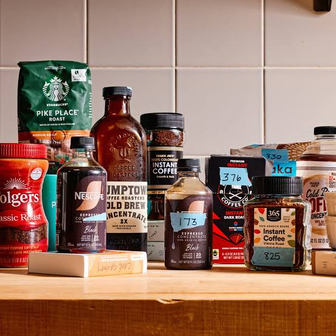
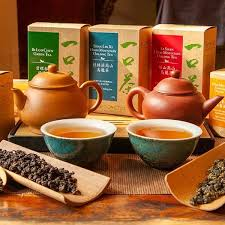

We offer a wide range of coffee products, including freshly brewed coffee, espresso, cappuccino, and specialty drinks. Our coffee beans are sourced from the finest farms around the world, ensuring a rich and flavorful experience in every cup.

Coffee descriptions
Espresso: A strong and concentrated coffee made by forcing hot water through finely-ground coffee beans.
Cappuccino: A classic Italian coffee drink made with equal parts espresso, steamed milk, and frothed milk.
Latte: A creamy coffee drink made with espresso and steamed milk, topped with a small amount of frothed milk.
Americano: A simple coffee drink made by diluting espresso with hot water, resulting in a milder flavor.
Our Tea Products
Tea products
We also offer a variety of teas, from classic black and green teas to herbal and fruit-infused blends. Each tea is carefully selected and brewed to perfection, providing a soothing and refreshing experience.

Tea descriptions
Black Tea: A robust and full-bodied tea made from fully oxidized leaves.
Green Tea: A light and refreshing tea made from unoxidized leaves, known for its health benefits.
Herbal Tea: A caffeine-free tea made from herbs, flowers, and fruits, offering a variety of flavors and aromas.
Fruit-Infused Tea: A delightful blend of traditional tea with natural fruit flavors, creating a unique and refreshing experience.